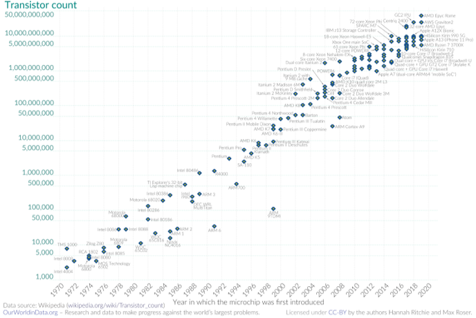

Lectures – Monitoring and Performance Engineering
Introduction
Programming is the art of telling another human being what one wants the computer to do.
Brief Biography
Donald Ervin Knuth, born on January 10, 1938, in Milwaukee, Wisconsin, USA, is a computer scientist and professor emeritus at Stanford University, best known as the author of The Art of Computer Programming, one of the most influential works in the field. Knuth studied mathematics at Case Institute of Technology and earned his Ph.D. in mathematics from the California Institute of Technology (Caltech). Often referred to as the “father of algorithm analysis,” he pioneered many of the foundational methods for analyzing algorithm efficiency. He is also the creator of the TeX typesetting system and the METAFONT font design system, both of which revolutionized scientific publishing. His meticulous approach to computer science has inspired generations of researchers and programmers. Throughout his career, Knuth has received numerous honors, including the Turing Award, the National Medal of Science, and the John von Neumann Medal. He continues to work on later volumes of The Art of Computer Programming and maintains his commitment to the precision and beauty of computing.
Improving Performance
The challenge of performance engineering lies in handling the increasing size and complexity of computations. Several strategies can help address this:
-
Faster processors: Following Moore’s law, the number of transistors doubles approximately every two years, leading to faster chips.
-
Parallelism: Use multicore processors, GPUs, or clusters to execute computations simultaneously.
-
Software optimization: Adapt algorithms to take advantage of hardware and domain-specific structures.

Moore's Law: The number of transistors on microchips doubles every two years
Bentley’s Rules for Performance
Jon Bentley proposed four practical rules to improve program performance. Each focuses on simplifying and optimizing both problem and implementation.
Code Simplification
Fast programs are simple. Keep code minimal and clean so that it is easier to optimize and maintain.
Key takeaway: Simplicity enhances speed and reliability.
Code Simplification
Imagine cooking a recipe with twenty unnecessary steps —every time you switch utensils or ingredients, you lose time and coordination.
If you simplify the recipe to the essential steps, you finish faster and make fewer mistakes.
Cooking well and quickly means keeping only what’s truly needed.
Problem Simplification
Simplify the problem itself before optimizing the code. Reducing complexity in the problem often yields a more efficient solution.
Key takeaway: A simpler problem produces a faster solution.
Problem Simplification
Suppose you need to organize a library. Instead of sorting all the books in the world by author and date, you decide to organize only the books you actually own.
By redefining the problem, you can move faster and get better results.
Before solving a problem, make sure you’re solving the right one — and at the right scale.
Relentless Suspicion
Question every instruction in time-critical code and every field in space-critical data structures.
Key takeaway: Constantly verify the necessity of each operation.
Relentless Suspicion
Think about packing a suitcase for a trip. Every item you pack takes up space and adds weight. If you look critically (“Do I really need this?”), you’ll realize many things are unnecessary.
The lighter the suitcase, the easier it is to move and the less time you spend searching through it.
Doubt everything that doesn’t add real value; lightness improves performance.
Early Binding
Perform computations earlier to avoid redundant work later. Precomputing results or decisions saves time during execution.
Key takeaway: Shift work forward when possible to minimize repetition.
Early Binding
It’s like ironing your clothes right after washing them instead of every morning before leaving home.
You put in effort once, and then you benefit for days.
Doing work early prevents having to repeat it later and keeps things flowing smoothly.
Optimization Ethics
While performance optimization is crucial, it should not come prematurely. As two pioneers famously warned:
Premature optimization is the root of all evil. — Donald Knuth
The first rule of program optimization is “Don’t do it.” The second rule (for experts only) is “Don’t do it yet.” — Michael A. Jackson
The goal of performance engineering is to first produce clean and correct code that behaves as expected. Only after correctness is guaranteed should optimization efforts begin.
Performance engineering, therefore, is not only about increasing speed but about understanding, measuring, and refining computation to achieve a sustainable balance between accuracy, clarity, and efficiency.